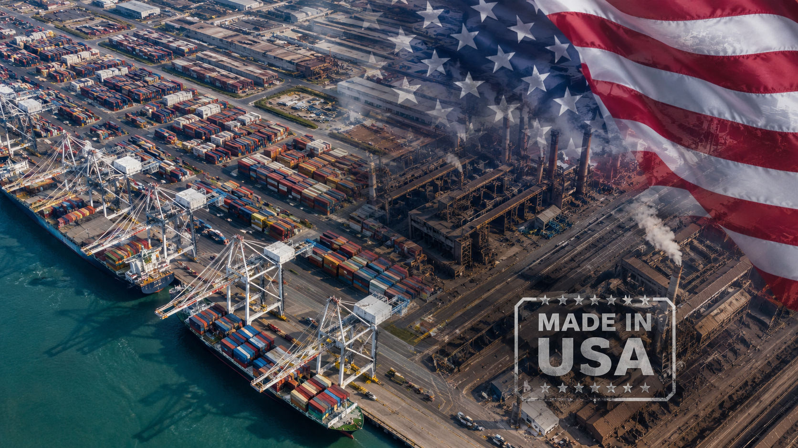

Perombakan Tarif Section 232 AS 2026: Yang Perlu Diketahui Setiap Eksportir Pengencang
Bagaimana Perhitungan Dasar Pajak Baru Mengubah Biaya Ekspor Pengencang ke Amerika

Pada 2 April 2026, pemerintahan AS menandatangani perintah eksekutif yang secara diam-diam menulis ulang persamaan biaya bagi setiap eksportir pengencang yang mengirim ke Amerika Serikat. Perubahan tersebut berlaku efektif pada 6 April 2026, dan implikasinya masih diserap oleh para produsen dan tim logistik di seluruh industri.
Perubahan Inti
Perombakan 232
Tarif Sekarang Diterapkan pada Nilai Produk Penuh — Bukan Hanya Kandungan Logam
Sebelumnya, tarif Section 232 pada produk turunan baja dan aluminium hanya dihitung berdasarkan bagian logam dari nilai produk. Di bawah aturan baru yang berlaku efektif 6 April 2026, dasar tarif adalah nilai pabean lengkap dari produk impor. Untuk pengencang — di mana biaya tenaga kerja, pelapisan, dan pemrosesan sering mewakili sebagian besar nilai produk — ini adalah peningkatan material dalam beban pajak aktual.
Kisaran Tarif
10% – 50%
Berlaku untuk Semua Impor Turunan Baja, Aluminium, dan Tembaga
Tarif Section 232 berkisar dari 10% hingga 50% tergantung pada klasifikasi produk dan negara asal. Produk logam murni seperti gulungan baja dan lembaran aluminium terus menarik tarif tertinggi. Pengencang dan produk turunan lainnya termasuk dalam kisaran ini — dan dengan dasar pajak nilai penuh yang baru, peningkatan biaya efektif secara signifikan lebih besar dari yang disarankan oleh tarif utama.
Perluasan Cakupan
Dinamis
Cakupan Produk Diperluas dan Terus Diperbarui oleh Commerce dan USTR
Kerangka kerja baru memberikan wewenang kepada Departemen Perdagangan AS dan USTR untuk memperluas daftar produk turunan yang tercakup secara bergilir — tanpa memerlukan penyelidikan baru yang formal. Produk apa pun yang secara langsung atau tidak langsung menggunakan baja, aluminium, atau tembaga sebagai komponen dapat ditambahkan. Bagi eksportir pengencang, ini berarti cakupan eksposur dapat meningkat kapan saja, dengan pemberitahuan terbatas sebelumnya.
Dampak pada Eksportir China
Struktural
Tarif 301 Masih Berlaku — Beban Gabungan Membentuk Kembali Arus Perdagangan
Bagi eksportir pengencang China, perubahan Section 232 memperparah lingkungan tarif yang sudah menantang. Tarif Section 301 tetap berlaku, dan beban gabungan mempercepat pergeseran sumber impor AS ke negara-negara dekat pantai. Analisis industri menunjukkan bahwa pengencang standar kelas bawah menghadapi pengurangan bersih yang sederhana dalam beban tarif, sementara pengencang kelas menengah ke atas dengan nilai tambah tinggi menghadapi tarif efektif yang lebih tinggi karena basis pajak yang diperluas.
Standar Kelas Bawah
↓ Sedikit Keringanan
Nilai Tambah Tinggi
↑ Beban Lebih Tinggi
Pangsa Pasar
→ Dekat Pantai
Bagaimana Eksportir Merespons
3 Jalur
Diversifikasi Pasar, Peningkatan Produk, dan Kapasitas Luar Negeri
Produsen pengencang China terkemuka tidak menunggu keringanan tarif. Tiga respons strategis mulai muncul di seluruh industri:
🌍
Diversifikasi Pasar
Secara aktif mengembangkan pasar ASEAN, UE, Timur Tengah, dan Amerika Latin untuk mengurangi ketergantungan pada volume AS.
⬆️
Peningkatan Produk
Mempercepat pergeseran ke pengencang khusus bernilai tinggi di mana diferensiasi teknis dapat mengimbangi kerugian harga yang didorong tarif.
🏭
Kapasitas Luar Negeri
Semakin banyak produsen terkemuka yang mendirikan atau memperluas produksi di Asia Tenggara untuk menyalurkan ekspor di luar kerangka tarif saat ini.
Intinya bagi Eksportir
Restrukturisasi Section 232 April 2026 bukanlah gangguan sementara — ini mewakili perubahan yang tahan lama dalam struktur biaya mengekspor pengencang ke Amerika Serikat. Mekanisme ekspansi dinamis berarti eksposur dapat tumbuh tanpa peringatan. Bagi eksportir yang telah mengandalkan pasar AS sebagai tujuan utama, pertanyaan strategisnya bukan lagi apakah akan melakukan diversifikasi — tetapi seberapa cepat.